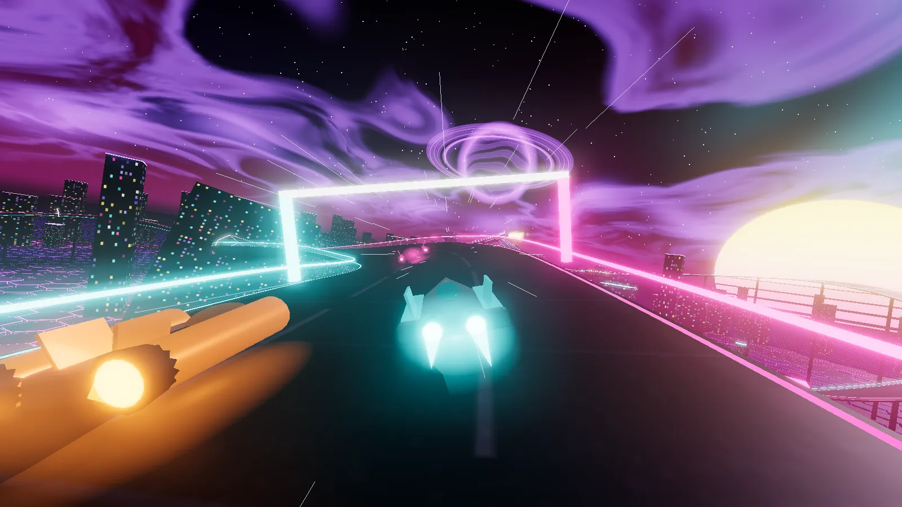
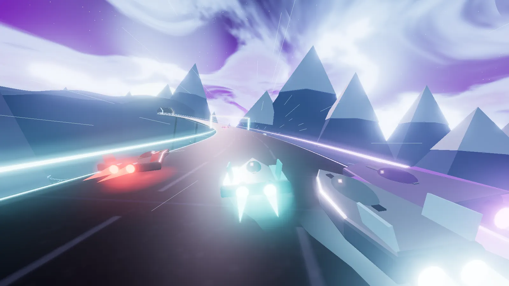
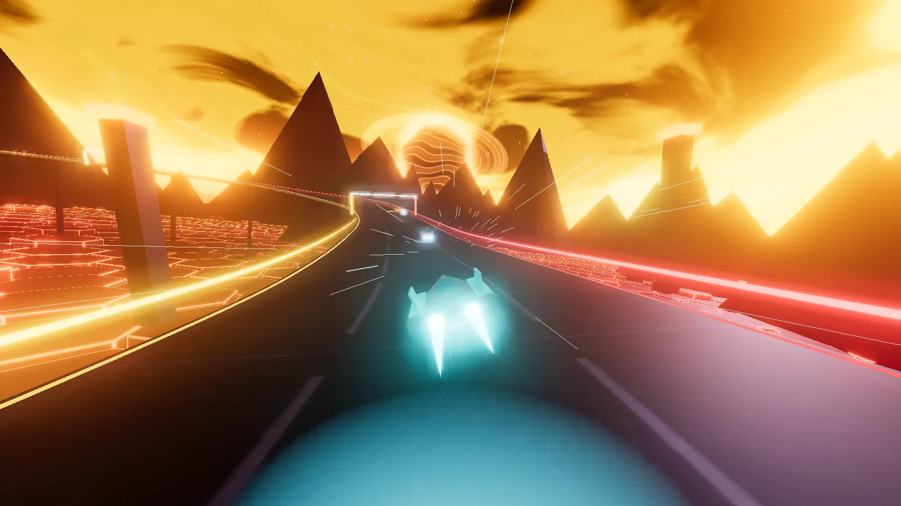
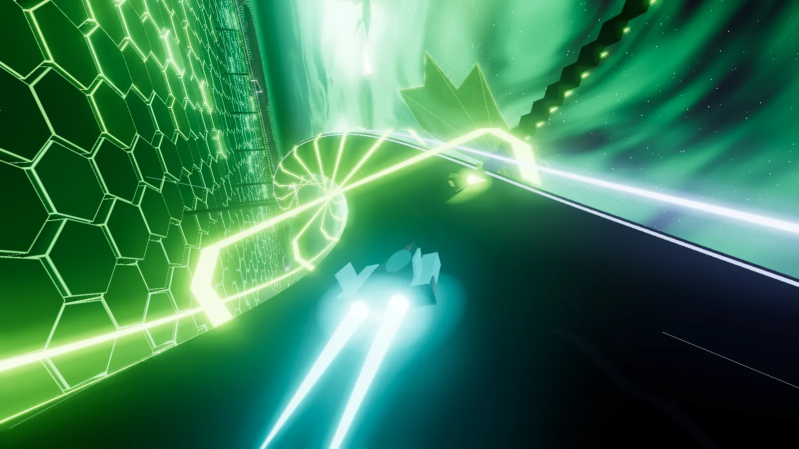
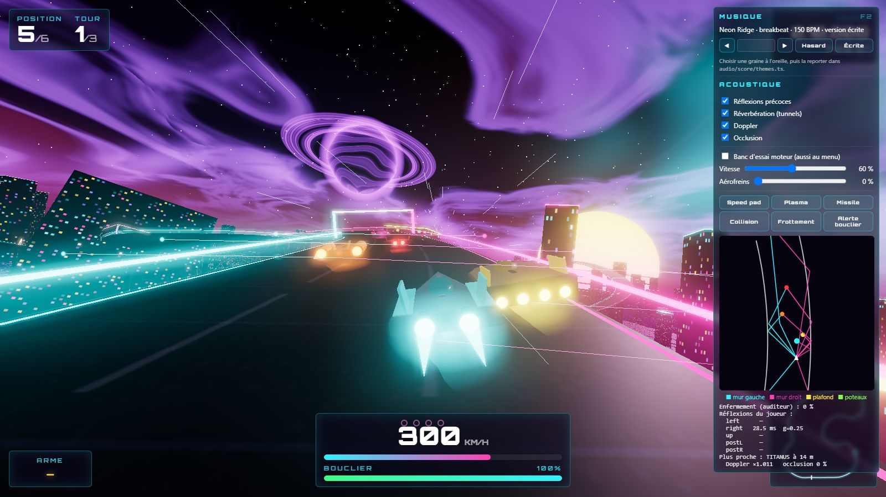
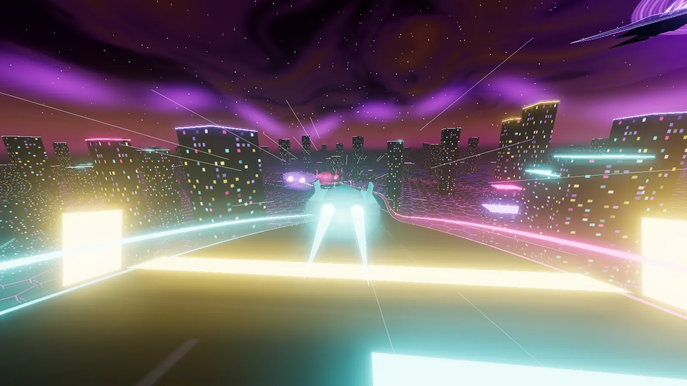
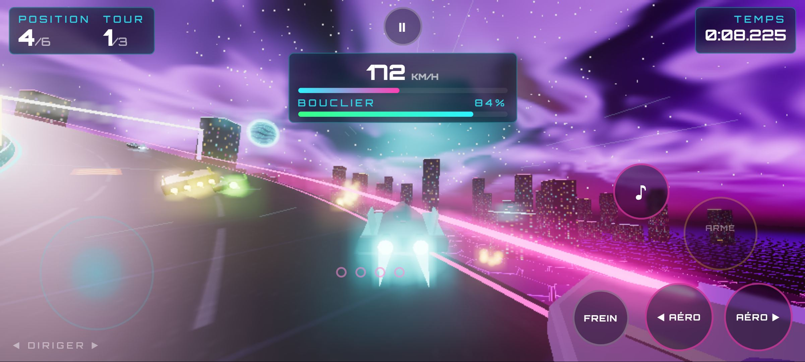

Technical write-up · Interactive music · Games
Hyperglide: an anti-gravity racer where the music drives the track
A browser racing game without a single audio file: the soundtrack is composed, synthesized and conducted in real time by an engine inspired by iMUSE, and the track itself is written like a musical score.

The game
Hyperglide is an anti-gravity racer: six ships, four circuits (a megacity at night, high mountains, a volcanic island, a lunar base), eight teams with distinct handling, weapons, speed pads, loops, corkscrews, tunnels and jumps. It plays with a keyboard, a gamepad or a touch screen, straight in the browser.
What sets it apart is elsewhere: the music does not accompany the race, it takes part in it. It follows the intensity of the race section by section, lands its drop on the takeoff of a jump, answers the dragons that burst out of the scenery, and becomes a driving mechanic: playing on the beat makes you faster.



Architecture
The code is TypeScript, bundled with Vite; rendering uses Three.js, the only runtime dependency. Everything else (sequencer, synthesizers, spatialization, physics, AI) is written for the project.
The structuring principle is a strict separation of the simulation. The track and race code (track/, race/) knows nothing of the DOM, Three.js or Web Audio: it advances in fixed 1/120 s steps and publishes events (overtake, hit, pad, landing, finish). Rendering, audio and UI subscribe to them. A full race can therefore run in Node, without a browser, which makes the physics and rules testable.
Each ship lives in the track's frame: s, the distance travelled (accumulated over laps), and x, the lateral offset. The track is a Catmull-Rom spline sampled every 2 m, with a frame per sample (tangent, right, normal) and its yaw and pitch curvatures. In loops and corkscrews the normal points to the figure's axis: the track becomes “magnetic” and holds the ship down.
iMUSE, the idea
iMUSE (Interactive Music Streaming Engine) is the interactive music system designed at LucasArts by Michael Land and Peter McConnell in the early 1990s, first used in Monkey Island 2: LeChuck's Revenge (1991) and patented (US 5,315,057). Its core idea is still strikingly relevant:
The game never cuts the music. It states a wish; the score decides when that wish becomes musically possible.
In practice, the composer writes conditional branch points into the score wherever a transition will sound right: end of a phrase, a bar line, a downbeat. The game only sets values. When playback reaches a point whose condition matches the value set, the transition happens: at the right moment, and never in the middle of a note.
Hyperglide adopts this model and its vocabulary, based on the technical documentation published by the community (the LabMidi / LabMuse repository), and implements it in TypeScript on top of Web Audio, with no MIDI files and no samples.
| Concept | Role in iMUSE | In Hyperglide |
|---|---|---|
| Sound file | The score of a piece | One theme per circuit, plus the victory and defeat jingles |
| Chunk | A sequence played as a block | 9 sections: intro, grid, cruise, build-up, drive, breakdown, final build-up, final, outro |
| Part | An instrumental part that can be switched on and off | About twenty parts: drums, acid bass, sub, pads, arpeggios, melody, the dragons' roar… |
| Hook | A conditional branch written in the score | Classes jump, layer, tension, speed, dragon |
| Marker + trigger | A command run when playback reaches a marker | The finish jingle starts exactly at the end of the outro |
| Fade, speed, CC | Fades, tempo, MIDI controllers | Tempo tied to speed, synth brightness (CC74) tied to engine revs |
The engine in detail
Musical time and scheduling
Musical time is counted in ticks: 480 per quarter note, bars in 4/4. One Player per sound holds an anchor (audio time, tick position) and a cursor into the chunk's sorted event list. Every 25 ms the engine advances each player up to now + 150 ms: notes are handed to Web Audio with their exact time (AudioParam and start(t)), which makes the music independent of the frame rate and immune to main-thread hiccups.
A player more than 500 ms late (background tab, throttled timers) resyncs instead of firing all the missed notes at once; lateness is measured on the next event, so a long written rest is not mistaken for lag.
Hooks: the score decides
A hook is a score event at a given tick, with a class, an id and an action (jump, enable parts, trim, transpose). The game sets one value per class; when playback reaches the hook, it fires if its id is 0 (unconditional) or equal to the value set. A jump hook is consumed: it does not fire again on the next pass.
// score excerpt: CRUISE section (8 bars)
jumps(b, [4, 8], { [JUMP.DRIVE]: MAIN.FILL_UP, [JUMP.FINAL]: MAIN.FILL_FINAL });
jumps(b, [2, 4, 6, 8], { [JUMP.BREAKDOWN]: MAIN.BREAKDOWN });
jumps(b, barEnds(8), { [JUMP.DROP]: MAIN.FILL_UP }); // possible at every bar
layers(b, ORCHESTRATION); // LAYER hooks 1 to 4 at bars 0, 2, 4, 6Quantization is therefore a compositional choice: cruise only hands over to drive at the end of a half-phrase (bars 4 and 8), breakdown can kick in every two bars, and the orchestration changes density on phrase boundaries.
The iMUSE commands, reproduced
- Integer-arithmetic fades at 60 Hz, like
FdFade: an integer slope plus a Bresenham-style remainder accumulator, landing exactly on the target at the last step. - Speed (
MdSetSpeed): 128 is the written tempo; tempo is a fadeable parameter like any other. - Jump and scan (
MdJump,MdScan): a jump lets sounding notes ring on; a scan replays the settings it passes over (parts, transposition) without playing notes. - Deferred commands on the audio clock (frozen while paused), triggers on markers, volume groups, a nested pause counter, priorities (at most four simultaneous sounds; the lowest priority gives way).
- MIDI controllers: CC74 (“brightness”) opens the synths' filters.
The output is an interface (MusicOutput): in production, WebAudioOutput creates one bus per sound and per part, with convolution reverb (a procedural 2.8 s impulse response) and delay; in tests, a fake output records the notes. The sequencer is thus tested without a browser.
Sixteen instruments, zero samples
Each instrument is a small Web Audio graph built note by note: a pitch-swept kick, snare and hi-hats from filtered noise, an acid bass with glide and a resonant filter, a detuned “reese”, pads, pluck, lead, noise riser, impact, alarm. The dragons' roar (growl) stacks three detuned sawtooths, saturation, a band-pass filter acting as a throat, a rough 31 Hz tremolo and a drop of a fourth at the end of the note.
The music director
The MusicDirector is the only place where the game talks to the music. It observes the race every frame and translates it into wishes:
- Intensity: 55% relative speed, 25% race position, 20% opponents within 60 m, a boost bonus and a rhythm-streak bonus (up to 0.25). It maps to an orchestration level from 1 to 4 with hysteresis: a change must be clear-cut (0.13 past the level's center) and hold for 1.5 s.
- Desired section: grid during the countdown, cruise or drive by level, breakdown after 2.5 s of lost momentum (big crash, wrong way), final on the last lap.
- Rhythm layers by speed: sixteenth-note hats, rolls, syncopated kick, shaker, re-evaluated every bar with a minimum hold of one second.
- Tempo: from −5% at a standstill to +8% at top speed, +5% when boosting, ×1.04 on the last lap, through small fades.
- Brightness: CC74 sent every 100 ms to the filtered synths, from 36 to 116 with speed.
- Accents: when hit by a weapon, the music “takes the blow” (volume down to 64 in 80 ms, back in 1.5 s, via a deferred command).
The finish follows iMUSE's end-of-combat pattern exactly: the director enables the jump to the outro and hooks the jingle's start, transposed to the current key, onto the outro's end marker. The jingle therefore starts right on the bar, wherever the music happened to be when the line was crossed.

The track as a score
The director above makes the music reactive. A good demo does better: music and image have an appointment. In Hyperglide, the circuit's big moments, the takeoff of a jump and the exit of a long tunnel, are musical appointments. The drop (the end of a one-bar build-up, the entry into the DRIVE section) must land the instant the player gets there, on every lap, whatever their speed.
The difficulty: the player moves in real time at a speed of their choosing, while the music moves in bars and can only jump at bar lines. As when syncing a demo to its soundtrack, two levers are combined.
1. Appointments read from the geometry
The appointments are extracted from the track: for a jump, the takeoff point is the first sample whose pitch curvature reaches 60% of the crest's (the ship lifts off before the top); for a tunnel of at least 220 m, its exit. Two appointments less than 700 m apart are merged in favor of the jump. Tunnels leading to an appointment become breakdowns: the music holds back in the tunnel and explodes at the exit.
2. Pick the bar, then adjust the tempo
Fourteen seconds before the appointment, the director takes over the tempo. It estimates the arrival time (distance, speed and, while the ship is still gaining speed, its acceleration capped at top speed), then enumerates the candidate bar lines: for each, the tempo factor that would make the drop land on time. It keeps the bar requiring the least change, within 0.90 to 1.16 times the written tempo, and sticks to it as long as it stays reachable: without that lock, speed variations would make the choice flip from one bar to another.
// for bar n (0 = the next one):
beats_to_bar = (4 − position_in_bar) + 4·n
factor = (beats_to_bar + 4) / (eta × nominal_tempo) // +4: the build-up lasts one barThe DROP jump is possible at every bar; the director only sets the hook when the next bar the sequencer will read is the right one, then, during the build-up bar, only fine-tunes the tempo to absorb the last speed changes.
3. Two clocks that don't quite tick together
The game runs on real time (requestAnimationFrame), the music on audio time (AudioContext.currentTime), driven by the sound card. On some outputs the two drift apart by several percent. The director continuously measures the ratio between the two clocks and converts the player's arrival time into audio time before planning.

Rhythm as a driving mechanic
A rhythm key (Shift, Y on a gamepad, the ♪ button on touch screens) pressed on the beat gives a boost that grows with the streak, up to ×8, with a bonus on the downbeat. Off the beat, it costs a little speed and breaks the streak. Crossing a speed pad or landing on the beat also scores. The streak feeds back into the music's intensity: playing in time lifts the orchestration.
- Judgment windows: perfect within ±55 ms, good within ±110 ms, widened by 40% for passive actions (pad, landing). Only one press counts per beat: mashing earns nothing.
- Judged at the heard instant: the press is timestamped in the event handler, on the audio clock minus the reported output latency and the calibrated delay, not at the next frame. This change brought the measured median error down from 59 ms to 5 ms.
- Balance: drag pulls speed back toward top speed at about 0.33/s, so a boost on every beat accumulates. Boosts are sized so that a perfect streak held throughout is worth about +3% distance; a test keeps the advantage between +2% and +6%.
- Opponents groove too: on each beat, each AI plays with a probability of 30% (novice), 55% (pro) or 80% (elite).
Calibration
Wireless headphones, TVs, reflexes: every setup has its own delay, and the latency reported by the browser often underestimates it. A calibration screen plays a 120 BPM metronome; after four listening clicks, the player taps sixteen times. The median delay, robust to stray taps (beyond 200 ms), is stored and applied to judgment as well as to music sync. The measurement uses exactly the clock that judges in-race: with a simulated player tapping 120 ms after each click, the screen measures 121 ms.
One soundtrack per circuit
Neon Ridge has a hand-written theme. The other three circuits have a theme generated from a seed and a style, with the same contract of sections and hooks: the director conducts any theme without knowing it.
| Style | Tempo | Modes | Color |
|---|---|---|---|
| Breakbeat | 146–154 | minor, dorian | breaks, acid bass |
| Trance | 138–146 | minor, dorian, harmonic | delayed plucks, wide pads |
| Industrial | 156–166 | phrygian, harmonic, minor | saturated acid, syncopated kick |
| Space | 132–142 | dorian, harmonic | reese bass, long reverb |
The generator (a mulberry32 PRNG) draws a key, a mode, an eight-bar progression whose last bar is always the dominant (made major, for a true leading tone), drum patterns with ghost notes, an acid bass as a random walk, then the melody. The melody is composed as a phrase, not as a string of notes: a one-bar motif (rhythm and contour), repeated, varied, then contrasted, in the form A A′ B cadence | A A″ C cadence on the leading tone. Downbeats always land on a chord tone. The test bench lets you audition other seeds mid-race to pick them by ear.
Making the music visible
For the scenery to follow the music to the millisecond, there is no need to analyze the output sound: every note is already known. MusicPulse sits between the sequencer and the output, records each note with its audio time, and returns per-frame envelopes per instrument family, a six-band “musical” spectrum with automatic gain control, and the tempo clock.
- Staging per section, demoscene-style: each section is a scene with its own dynamics; build-ups hold back and darken; every heard section change is a hard cut (flash, palette, ground pattern). In tight corners the scenery fades to let the track read clearly.
- Hexagonal ground of columns, animated in spirals, rings or sectors depending on the section; the columns along the track stay calm for readability.
- Sky: fractal-noise clouds, four plasma clouds each tied to a band, planets that vibrate with the sound and rings that ripple on the kick.
- Procedural dragons burst out of the ground on drops; while they are out, the
dragonhook brings their roar in at the next bar. The music animates the scenery, and the scenery writes into the music.
Spatial audio
Engines and sound effects are also synthesized and spatialized (HRTF panning, Doppler), with acoustics computed from the circuit's geometry:
- Image-source early reflections off the left wall, the right wall and tunnel ceilings: delay (2 to 40 ms), absorption and impact position. Skimming a wall, the reflection drops to 3 or 4 ms: you hear the comb filtering shift with distance.
- Colonnades: each pillar is a point scatterer, hence a flutter echo every 12 m.
- Tunnels: convolution reverb whose send follows each source's enclosure, a bass boost, and occlusion of an opponent heard from outside.
Mobile and performance

The game detects touch screens, shows its controls and switches to a lighter quality (1× resolution, half-resolution bloom, simplified sky). On every device the quality adapts by itself: if the average frame time exceeds 22 ms over a 3 s window, it drops one tier (lighter sky rendered separately at low resolution, then half-resolution bloom, then reduced resolution), and never climbs back during a race to avoid oscillation. The first five seconds, spent compiling shaders, don't count.
A measurement lesson: rendering the sky at half resolution looked like an obvious win. Measured on a desktop GPU at 1080p, the extra pass costs as much as it saves; so it is only enabled where fill rate is the bottleneck, on mobile and at the first downgrade tier.
Method and tests
140 automated tests cover the track geometry, physics, full races between AIs, the iMUSE sequencer (with a fake output), the soundtrack (every theme runs through all its sections and every hook enters and leaves on the bar), melody generation (repeated motif, cadences, chord tones on downbeats), staging, drop sync, rhythm judgment, balance and adaptive quality.
What tests cannot see is checked in a real browser by automated probes: driving the game, pressing the rhythm key on heard beats, measuring the gap between drop and takeoff, emulating a phone in landscape and portrait, capturing the frame right after a render. The figures in this article come from them.